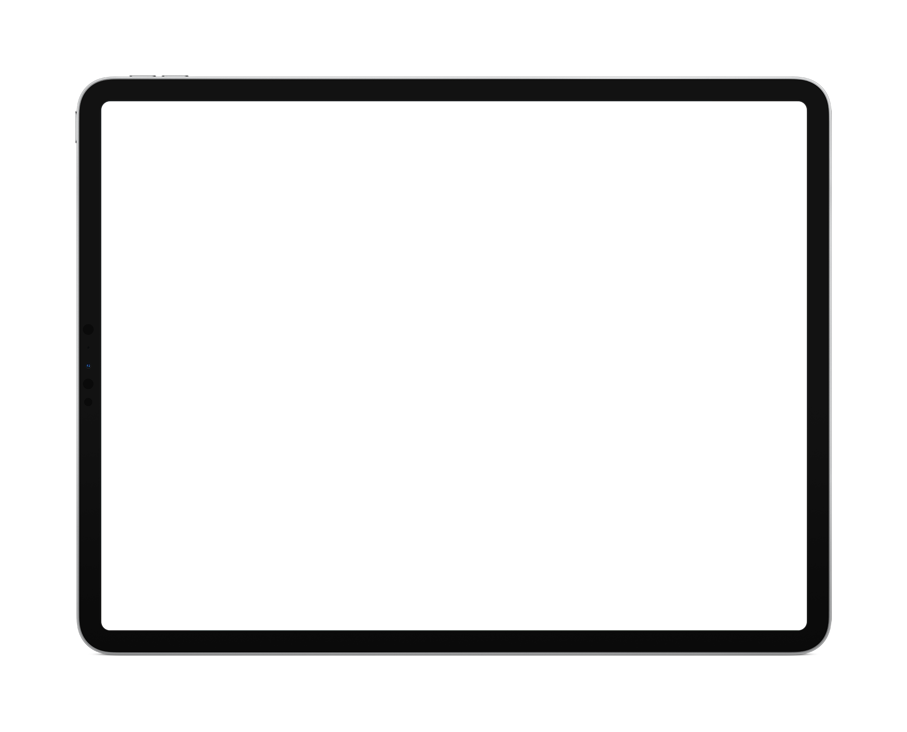
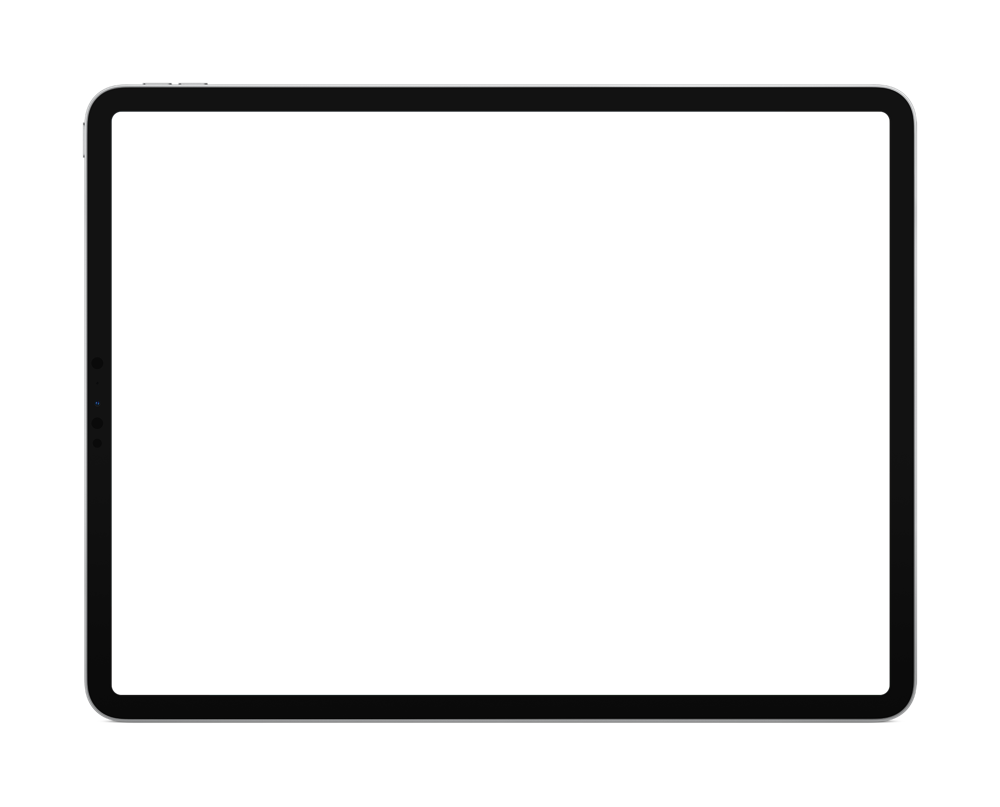

Welcome.
I'm a multi-disciplinary designer. Passionate about Rapid Prototyping and Motion Design. I have fun designing and coding my ideas. More about me?
Formed as an Industrial Designer, I have served as a Product Designer, Rapid Prototyper, and Design
Technologist accross multiple startup-like teams within Innovation and Research & Development at Flextronics,
Hisense, and Katerra.
My past experiences involve working in cross-functional teams designing entire end-to-end experiences such
as the creation of a hybrid
Dual-Screen Smartphone
at Flextronics — Conceptualizing and prototyping Touch, D-Pad, and
Voice User Interfaces
, which developed into multiple
Smart Displays
, and TV products for Hisense, Toshiba, and Sharp — The creation of
UI Design Systems
and enterprise applications for Katerra's Advanced Buildings and
IoT products
ecosystem.
Over my 10 past years of experience I've gained insightful experience by working together with highly
collaborative & cross-functional teams across different time-zones, languages, and regions, like Canada,
US, China, Mexico, and India.
My contributions have listed me as a registered inventor in multiple technology &
innovation patents
, and rewarded me with final positions in international design contests such the
Index
Project Award.
I'm very passionate about designing and prototyping new concepts, innovative experiences, and meaningful
solutions, driven by my immense curiosity to understand and explore multiple disciplines outside my work.
See Less
 
